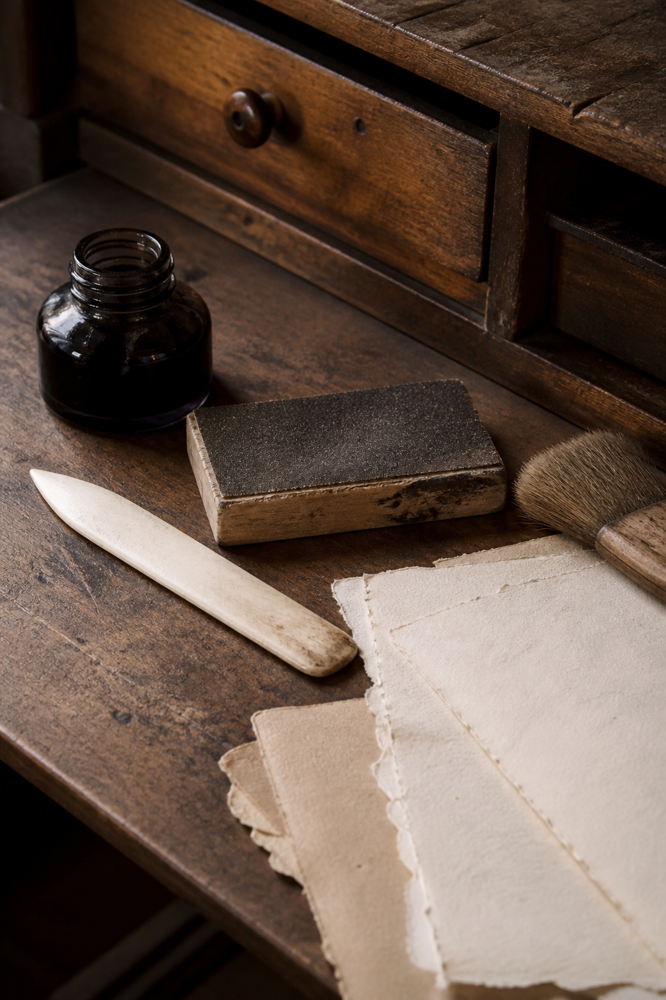
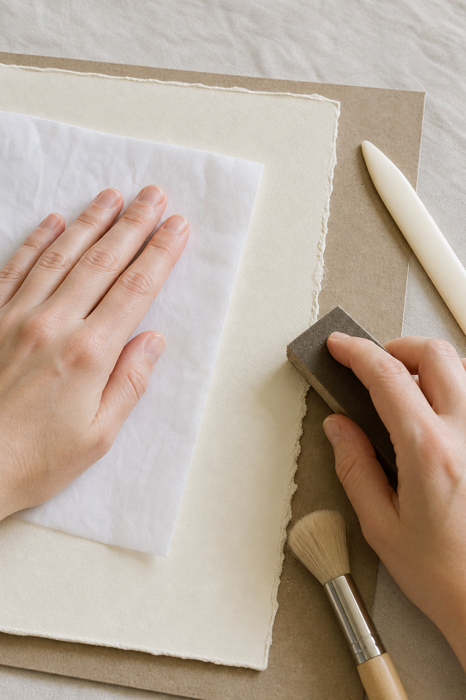

A convincing distressed edge is rarely made with one dramatic technique. Tear first, soften selected high points, remove the dust, and add color only where natural handling would leave a shadow.

Match the method to the paper
Thin book paper tears easily and needs little sanding. Thick watercolor paper can take more abrasion. Test an offcut and stop as soon as fibers begin to separate more than you want.
Tear against a damp guideline
Draw a clean brush loaded with water along the intended edge. Wait a few seconds, then tear slowly. The damp fibers create a soft deckle. Use less water on thin paper to avoid an uncontrolled split.
Protect the center
Place scrap paper over the area you want to keep clean. Hold it firmly while sanding the exposed edge with short outward strokes. This prevents accidental scuffs across photographs, handwriting, or pale focal areas.

Vary the pressure
Distress two or three small sections more strongly and leave the rest almost untouched. Even abrasion looks manufactured. Natural wear gathers at corners, folds, and places repeatedly handled.
Brush away every loose fiber
Use a soft dry brush before adding adhesive or ink. Dust weakens glue and creates muddy marks. If the edge feels furry, trim the longest fibers with small scissors rather than sanding the whole area again.
Add a narrow shadow
Use a nearly dry sponge or brush with diluted walnut, gray, or brown ink. Touch the torn peaks and corners, leaving the inner paper light. Strong dark outlines can make every layer look artificially burned.
Combine textures selectively
Pair one distressed layer with one clean-cut layer. The contrast makes the worn edge meaningful. When every piece is torn, inked, and sanded, the page loses hierarchy and the effect becomes noise.
Soft distressing should suggest time and touch. Stop while the paper still feels strong, and let its natural fibers do more of the visual work than the ink.
Image note: Some visuals in this article were created with AI and curated by Sentimentalica.